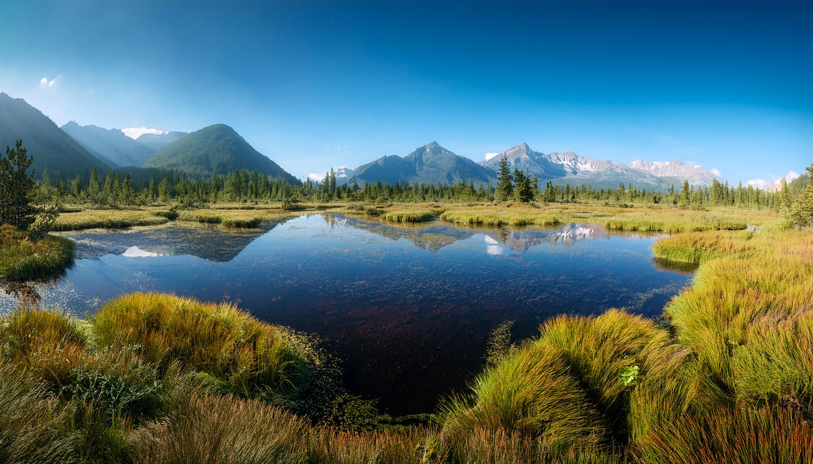
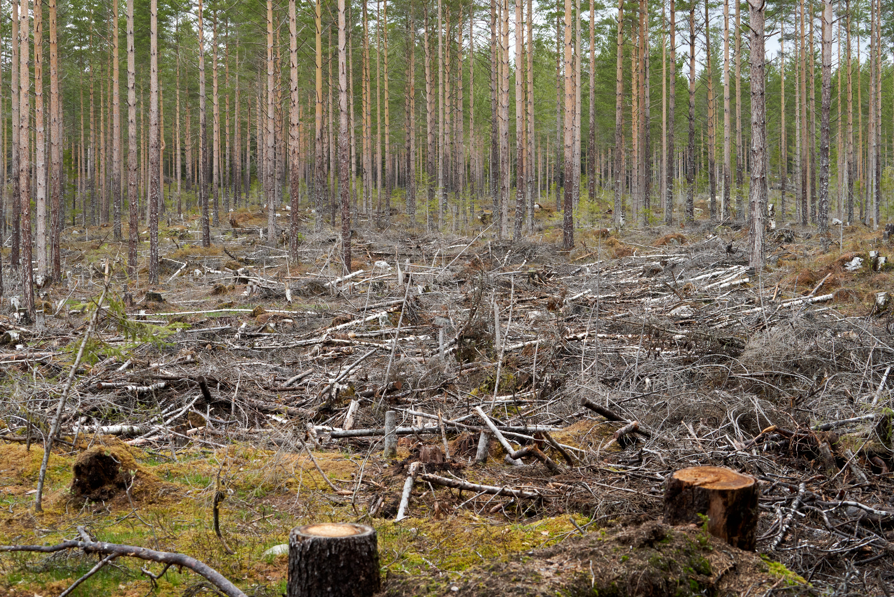

Websites about Protected Areas Issues
Protected areas are places set aside to protect nature, including national parks, nature reserves, and marine reserves. They give animals and plants safe habitats and help prevent species from disappearing. They also store carbon, which helps limit climate change, and protect rivers, lakes, and other water sources. Today, these areas are essential for both healthy ecosystems and people’s well-being. Below are six websites that explore the main issues and strategies for protecting these areas.
Useful websites
- IUCN — Protected Areas
- Protected Planet
- UNESCO World Heritage List
- Parks Canada
- CBD — Target 3 (30% by 2030)
- Nature Conservancy of Canada
Why it matters

Protected areas face real pressure: logging, mining, roads, mass tourism and climate change. Many parks exist on paper but lack the staff and money to be managed well. The world has agreed to protect 30% of land and sea by 2030, but today only about 17% of land and 8% of the ocean are protected.